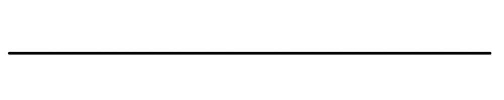

Sprint 1 Demo
This shows our sprint 1 prototype in action. It is using a placeholder infrared sensor to sense when something covers it in shadow. When it senses that, the servos stop moving and the LED goes from green to red to symbolize that it is stopped.
Sprint 1 Mechanical Design

During our first sprint, we were mainly ideating on what behaviors we wanted the creature to have and
how we wanted to go about making those behaviors possible.
We wanted to have a system that is able to do multiple motions with a limited amount of components
since the design has very firm space constraints.
We also wanted to design the creature to be able to be able to revert back to its original standing
position after a behavior ended.
Our original design included a spine made up of six servos. We created the boxy shape of the
creature by attaching the frame to the servos which allows
it to have both a distinct shape and a moveable body. We considered having the beak be able to open
and close via cam when it sensed that food was in its beak. Another mechanical
aspect we explored was having the creature be able to vibrate by using a DC motor.
We chose six servos because we could have three servos move in one axis and the other three servos
move in another axis. This would allow the creature to bend forward and wiggle around.
We wanted it to bend over and go to sleep when a blanket was put on it and we wanted it to wiggle
when it felt happy or excited.
Sprint 1 Electrical Design

During sprint 1, we ordered the sensor we needed. They did not arrive until after the end of sprint 1. As a result, we substituted an IR Distance sensor. The purpose of this was to demonstrate an interaction. We paired this sensor with two servos in a demonstration of a small segment of our early spine design. We also included an RGB LED that we scavanged from the Electrical Stockroom. This was meant to demo how the light would correspond to interactions. All of these components were hooked up to the Arduino R4 Wifi that we used throughout the project. At this point, the Arduino was powered and uploaded to from a laptop.
Sprint 1 Software Design

Since we were focusing as a team on creature design and were lacking some of the electrical components we wanted, we designed a simple sensing loop for Sprint 1 that could integrate easily and communicate the idea of a Finite State Machine. The state diagram is pictured on the left. The creature had two states: Nothing Found and Sensor Activated. While in Nothing Found, the LED was red and the servos remained still, while in Sensor Activated the LED was green and the servos moved. The creature switched states depending on whether the sensor reading was high or low.
Since Sprint 1 was primarily used for design exploration, a theoretical full state machine for the creature was also created, pictured on the right. The creature would have had three main states—Standby, Sensing, and Reacting—which would have been changed through user interactions. This control system was inspired by Tamagotchis, which feature slowly draining health bars that prompt user interaction through button presses. During Standby, the creature would have lost “health.” This would have been addressed by pressing a button to interact with the creature, initiating the Sensing mode, where the creature would have used its sensor to detect user interaction. If the user interacted successfully, the creature would have played a happy animation and reset its health. A back button option was included to prevent soft locks in case the sensor failed to register interaction.

Sprint 2
Sprint 2 Mechanical Design

Between our first and second sprint, we decided to make a pretty big pivot in our mechanical design.
After discussing with the software team, we realized that wrangling six servos
was outside the scope of the project. They poses an issue because they would be under stress and
would get further and further away from their starting
position which would result in the servo no longer knowing where its home position is. This would
mean that the creature would be unable to return to its original
position and calibrating and tuning six servos would cause a lot of unnecessary complexity to our
design.
Our new design takes a different approach. Instead of having six servos, we narrowed it down to
three. These three servos will now pull down on strings attached to the frames of the
creature. This will mean that there will be less strain on the servos, and there will be less
complexity for the software team. This changes how the creature will actuate, but it should
still be able to make multiple organized behaviors with just the pulling of the strings.
One of the major concerns with this new design is tensioning the strings. Having improper tension
could completely mess up the creature's ability to move so we needed to make sure
to manage the tension appropriately. Another concern is that we needed the creature to bend
uniformly throughout the frames. As you can see in the cardboard sketchmodel in the top left corner,
without any padding inbetween the frames, only the top frame bends. We added springs in the gaps of
the frames to help the creature bend uniformly.
Sprint 2 Electrical Design

During sprint 2, we received and calibrated our hall effect sensor and force sensitive resistor. Above are the plots created with the data taken. This allowed us to create thresholds above/below which the creature sensed being fed or pet. We also got the pixel LEDs that we used in the final design. Additionally, we got the Raspberry Pi 5 up and running, which meant that our arduino scripts could be uploaded and compiled through the Pi. We got a good portion of the full circuit built, including the Pi, Arduino, two sensors, and LEDs. We already had the servos we used in the final design, but did not add them to the circuit due to currant draw concerns. This was around the time we transitioned to a different design that used fewer, but significantly larger servos. The previous servos were 60mA, and the new ones were 2A. Of the components we did wire, we stuck to running one or two at a time to ensure safety. It was around this time that we decided on a rough final circuit design, and started thinking about bigger power supplies.
Sprint 2 Software Design
.png)
For Sprint 2, we focused on integrating our new sensors and pivoting our mechanical design, so the only scripts that were written were for testing and calibrating the sensors. The control software for this section was purely theoretical, but it became much more fleshed out during this sprint since we had the necessary parts to gain clearer understanding of what the creature should do. The hardware that would have been used in this system is shown in the diagram.
While the overall loop appears similar to the previous sprint, the state change descriptions illustrate what each specific component would have been doing in each state and show that there were actually two versions of both the Sensing and Reacting states. One version supported the food loop, where the user selected the feed button and “fed” the creature using the hall-effect sensor, which the creature then reacted to before its hunger was reset. A second, parallel loop functioned similarly but targeted boredom instead, using the force sensor. These two action loops significantly increased the complexity of the system compared to the previous sprint.
Sprint 3
Sprint 3 Mechanical Design

Here is the sprint 3 prototype in action. This showcases the new string and foam design with the 3D printed spine. It does not show the base shape change yet.

After we solidified how we wanted to pivot our design, we got to work refining all of the details and creating more CAD for individual pieces. We changed the base's design to be more interesting in the form of an octagon, but that posed its own unique challenge with the fact that the box joints don't line up perfectly. Because we were thinking of how to assemble everything, we created mounts for all of the components and put emphasis on finalizing their placement in the base. The faceplate was also created to house the LED screen eyes and add to the space aesthetic of the creature.

Here is the CAD for some of the individual components. The speakers, LED screen, RGB light, button, spool, and beak movers are featured in this image.
An important aspect that we adjusted in this sprint is that we changed the springs to foam. We found the springs to be too stiff and they did not allow for the slats to bend enough. After a lot of deliberation, we decided that upholstery foam would be perfect. We updated the slat CAD to include many little holes to allow the foam to be sewn on. We also got to work creating large spools that allow the strings that pulls the creature to spool around once. There are three spools with one on top of each servo.
Sprint 3 Electrical Design

It was during this sprint that the final circuit design was finalized, including Pin numbers that could be shared with software. A final power supply was ordered. The full circuit was wired and soldered together the same day the power supply arrived. It includes the Pi with a speaker bonnet and two speakers, two OLED screens, three servos, the two sensors, the pixel LEDs, and three buttons.

When the circuit was first wired, our focus was on quick completion so testing of components and inital code testing could be completed. Additionally, there were no heat guns available for use during the soldering process that day, so electrical tape was used as a temporary substitute. Once the testing process was underway, and on a day that the other software subteam member was busy, wire management became the focus. We added heatshrink tubing and resoldering to more appropriate lengths based on the known mechanical requirements. We also made sure to properly detangle everything and twist or tape things together to minimize future issues.

Another major step for electrical this sprint was getting the screens up and running. We had to do research on SPI control, specifically with the screens we had that required 10 pins to be wired. It took significant effort and testing to ensure that everything was properly secured because we had a set of pins that were fairly easy to bend and we didn't have the appropriate connector. The appropriate connector wouldn't have been of much use to use because we were soldering the screens to the speaker bonnet breakout holes. We tested continuity before applying power which was good because we had to remove a small amount of solder connecting two pins. It took a full day and the joint effort of software and electrical (or rather one person on both subteams) to get the screens fully operational due to a lack of existing drivers that would have worked for our project.
Sprint 3 Software Design
With the speakers and screens wired, we were ready to integrate them into the software. The first step was writing custom drivers for both the speakers and the screens, allowing us to run audio files and animations quickly and easily using simple function calls. This approach helped keep our final state machine(s) much cleaner.
Since this sprint marked our first time integrating the state machine with all of the electrical components, we opted to use the simplified state machine pictured above. In this version, we only implemented part of one possible loop of the system. This loop used all of our components except for the buttons, which were implemented later, and the servos, which would have added a significant level of complexity to testing and were therefore excluded from this initial integration.
Integrating this smaller portion of the state machine allowed us to debug individual aspects of the system much more quickly than if we had worked with the full implementation. It also provided the foundation needed to revise the complete state machine and made the next round of integration considerably smoother.
Final Design

Many tradeoffs were made in our final design in order to have a functioning prototype for Demo Day. We had originally planned to make the whole creature fluffy, but we only covered the top of the head with fur to allow for easier debugging and less time spent on non-essential tasks. We wanted to paint the creature to have a space celestial theme, but we had to settle for only using colored acrylic and blue and purple buttons.
We also traded off screen quality for power consumption because we wanted screens that we could just run off the Pi without using another power supply since we already had two.